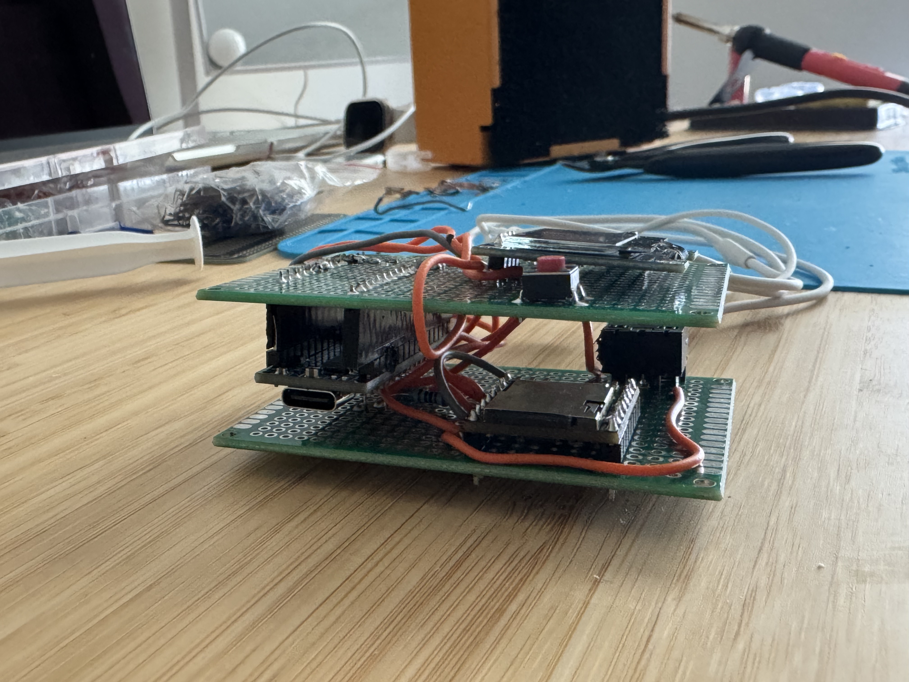

Portable MP3 Player

the problem
I wanted a self-contained portable music player: something that runs off its own battery, charges over USB, and doesn't depend on a phone or a streaming service. It needed to be genuinely portable — carried on its own, with a power switch that actually cuts current, and everything soldered together rather than left on a breadboard.
what i did
I designed and built a battery-powered MP3 player around an Arduino Nano, a DFPlayer Mini decoder, and a 0.96-inch SSD1306 OLED, then soldered the whole thing to a PCB. Power comes from a 3.7V 2000mAh LiPo through a PowerBoost 1000C, which charges the cell and boosts it to a shared 5V rail; an SPDT slide switch on the PowerBoost's EN pin gives a true hardware off at around 20µA rather than a sleep state. Three tactile buttons handle play/pause, next, and previous, and audio comes out through a 3.5mm jack.
close up



the result
The finished player runs off the LiPo, charges over USB while still operating if needed, and switches fully off at the hardware level. Two bugs stood out along the way: the OLED's address turned out to be 0x3C rather than the 0x3D the library defaults to, and the generic board's pin order (GND, VCC, SCL, SDA) doesn't match Adafruit's — wiring by physical position instead of checking the silkscreen would have been a silent failure.
In the future, would like to design with a 3D printed enclosure in mind.